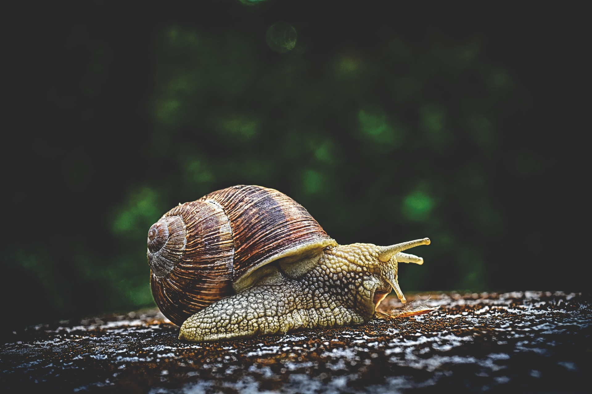
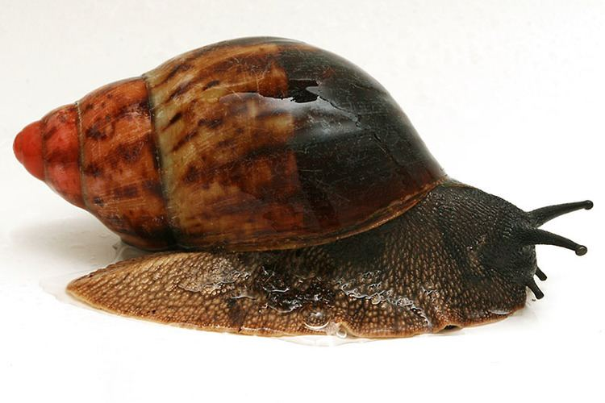
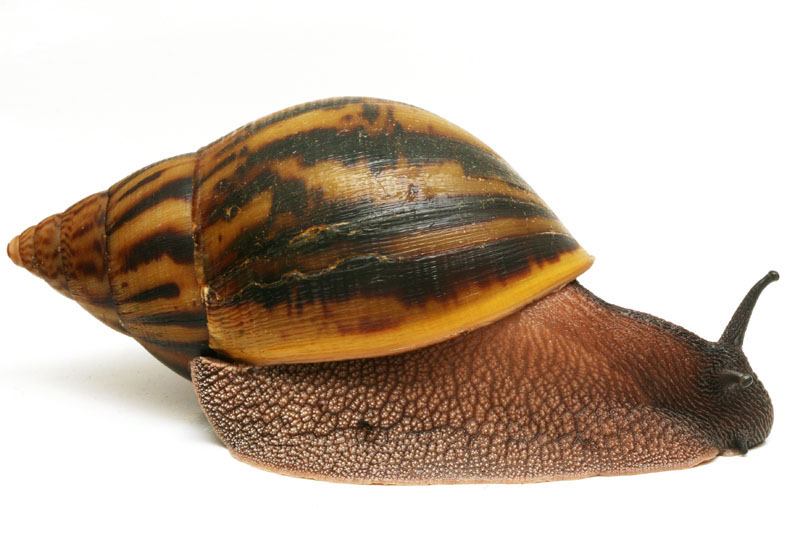
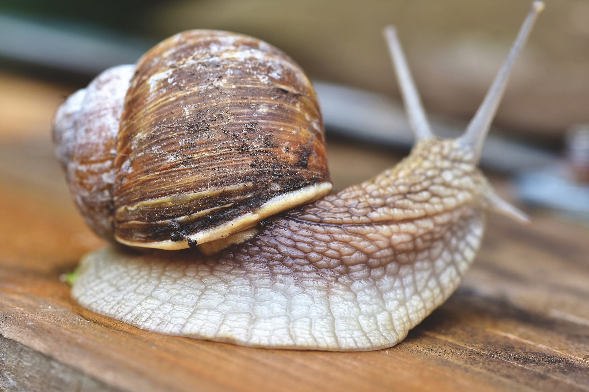

Snail Farming What You Need to Know
Why Snail Farming
So why snail farming you might ask, just let you know snail farming is the rearing of snail for human consumption while I am not promising you that you will get rich quick in snail farming that doesn’t mean that if you are patient enough you won’t make tons of money so why snail farming you might ask, just let you know snail farming is the rearing of snail for human consumption while i can really tell you that we have people who are making millions in snail farming so you might want to consider that , the beauty of snail farming is that there is always a high demand for snail farming in the market no matter the number of snails you turn out in a particular harvest.
We have restaurant, individuals and a lot of organization out there who are willing to pay whatever amount you charge them for your product, so there is no need to worry about who to sell your snail to and the beauty of this snail farming is that it is still less competitive so you don’t have to worry, your with the market. Snail meat has been ravened by people worldwide for a very long time now. It is high in protein and iron, low in fat, and contains all the amino acids required by the body. Lots of study likewise demonstrated that the glandular substances in snail meat cause agglutination of certain microorganisms, which could be of worth in battling a lot of ailments, including whooping cough.
Types
Snail is an exceptionally source if meat, which is also high in phosphorus, calcium and iron, and low in fats, sodium and cholesterol. There are numerous types of edible snails which can be can be used in snail farming,different snails having different shapes, shapes and colour. Example are the Africa giant Snail, Fresh water Snail, Small size Snails, Periwinkle. Snails cut across crucial areas such as the pharmaceutical business, assembling and angling commercial enterprises.
The productive nature and the high demand of snail bridge the gap and repay farmers for its long incubation time of two years. Snail farming requires little capital and the running expense is low, the size of the farm is determined by the capital available and the area of the ranch. For large farm, it is important to obtain a permanent site for your farm. The giant Africa snail (Achatina Marginata) is the best species for snail farming because of its productivity.
However, there are 3 main classification of african snails, they are:
- Achatina Marginata 
- Achatina Achatina 
-
Achatina Fulica

Nutrients
For you to be motivated about this lets talk more about the nutrient that is found in snail meat. A 100 gram snail meat which is also about 3.5 ounces give the body 90 calories. Most of this calories comes from the protein that is present inside it. Snail also contains valuable lectin which possesses an anti-cancer properties and also helps to boost the immune system in fighting against cancerous cells. The snail ooze has a great degree of allantonin, collagen and elastin, which is helpful for the treatment of skin sicknesses and broken bones.

The secretion likewise have a copper peptide, which is viewed as the main wellspring of a substance produced for making creams that are helpful in minimizing scars and wounds.An average Snail is comprised of 80% water, 15% protein, and 2.4% of fat which is primarily healthy fat. A snail contains essential fatty acids, calcium, iron, selenium, and magnesium are also found in snails.